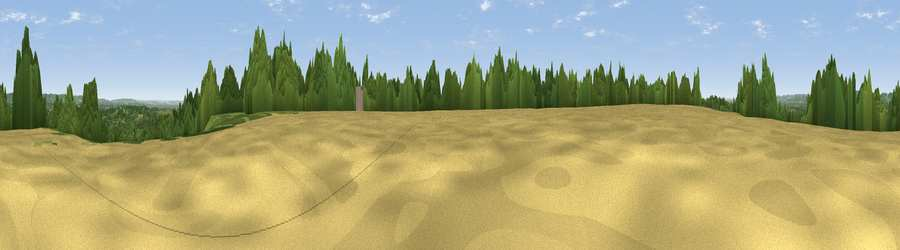

Viewpoint near Markbeech
#32860 in England · top 41% of its area beats it · near MarkbeechThe view, rendered

A 360° render of this exact spot computed from the terrain model, tree cover and land cover — summer colours, afternoon light, calibrated against photographs of famous viewpoints. Real trees, hedges and buildings will differ in detail.
The panorama
Grey silhouette: terrain skyline in each direction (720 bearings, Earth curvature and refraction included). Dashed green: skyline with trees (+15 m) and buildings (+8 m) as obstacles. Blue strip: how far the ground is visible on each bearing.
Where the view opens
Wedge length = distance to the farthest visible ground on that bearing (vegetation-aware). Rings at 10, 25 and 50 km.
What fills the view
46% woodland · 34% grassland · 18% cropland · 2% built-up
Angular shares of the visible panorama (visual magnitude), not map area. Landscape diversity 0.49 (0–1 Shannon).
Key numbers
More beautiful places nearby
The staircase of upgrades: each row has a higher view potential than everything closer. Driving times are estimates from straight-line distance, calibrated against real road routing — check an actual route before setting out.
| Place | Direction | Drive | Score |
|---|---|---|---|
| Viewpoint near Penshurst | E · 2 km | ~5 min | 43.1 |
| Viewpoint near Markbeech | W · 2 km | ~5 min | 55.8 |
| Viewpoint near Bidborough | E · 8 km | ~16 min | 57.2 |
| Viewpoint near Ide Hill | N · 9 km | ~17 min | 67.9 |
| Viewpoint near Shipbourne | NE · 13 km | ~23 min | 69.1 |
| Box Hill | WNW · 30 km | ~48 min | 70.4 |
| Viewpoint near Box Hill Village | WNW · 31 km | ~48 min | 71.0 |
| Malling Hill | SSW · 32 km | ~50 min | 73.8 |
51.16511, 0.13860 · source: screening · position refined by local search. Computed location — check access rights before visiting.